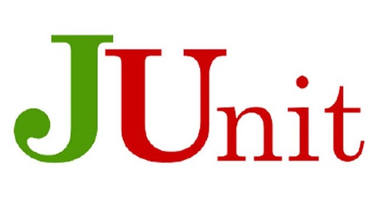

一、什么是JUnit？
JUnit是Java编程语言的单元测试框架，用于编写和可重复运行的自动化测试。
二、JUnit特点：
- JUnit 是一个开放的资源框架，用于编写和运行测试。
- 提供注解来识别测试方法。
- 提供断言来测试预期结果。
- JUnit 测试允许你编写代码更快，并能提高质量。
- JUnit 优雅简洁。没那么复杂，花费时间较少。
- JUnit测试可以自动运行并且检查自身结果并提供即时反馈。所以也没有必要人工梳理测试结果的报告。
- JUnit测试可以被组织为测试套件，包含测试用例，甚至其他的测试套件。
- JUnit在一个条中显示进度。如果运行良好则是绿色；如果运行失败，则变成红色。
三、JUnit注解
| 注解 | 描述 |
|---|---|
| @Test | 测试注解，标记一个方法可以作为一个测试用例 。 |
| @Before | Before注解表示，该方法必须在类中的每个测试之前执行,以便执行某些必要的先决条件。 |
| @BeforeClass | BeforeClass注解指出这是附着在静态方法必须执行一次并在类的所有测试之前，这种情况一般用于测试计算、共享配制方法(如数据库连接)。 |
| @After | After注释表示，该方法在每项测试后执行（如执行每一个测试后重置某些变量，删除临时变量等）。 |
| @AfterClass | 当需要执行所有测试在JUnit测试用例类后执行，AlterClass注解可以使用以清理一些资源（如数据库连接），注意：方法必须为静态方法。 |
| @Ignore | 当想暂时禁用特定的测试执行可以使用这个注解，每个被注解为@Ignore的方法将不再执行 |
| @Runwith | @Runwith就是放在测试类名之前，用来确定这个类怎么运行的。也可以不标注，会使用默认运行器。 |
| @Parameters | 用于使用参数化功能。 |
| @SuiteClasses | 用于套件测试 |
四、JUnit断言
| 断言 | 描述 |
|---|---|
| void assertEquals([String message],expected value,actual value) | 断言两个值相等。值类型可能是int，short，long，byte，char，Object，第一个参数是一个可选字符串消息 |
| void assertTrue([String message],boolean condition) | 断言一个条件为真 |
| void assertFalse([String message],boolean condition) | 断言一个条件为假 |
| void assertNotNull([String message],java.lang.Object object) | 断言一个对象不为空（null） |
| void assertNull([String message],java.lang.Object object) | 断言一个对象为空（null） |
| void assertSame([String message],java.lang.Object expected,java.lang.Object actual) | 断言两个对象引用相同的对象 |
| void assertNotSame([String message],java.lang.Object unexpected,java.lang.Object actual) | 断言两个对象不是引用同一个对象 |
| void assertArrayEquals([String message],expectedArray,resultArray) | 断言预期数组和结果数组相等，数组类型可能是int，short，long，byte，char，Object |
让我们看下使用断言的例子。
AssertionTest.java
public class AssertionTest {
@Test
public void test() {
String obj1 = "junit";
String obj2 = "junit";
String obj3 = "test";
String obj4 = "test";
String obj5 = null;
int var1 = 1;
int var2 = 2;
int[] array1 = {1, 2, 3};
int[] array2 = {1, 2, 3};
Assert.assertEquals(obj1, obj2);
Assert.assertSame(obj3, obj4);
Assert.assertNotSame(obj2, obj4);
Assert.assertNotNull(obj1);
Assert.assertNull(obj5);
Assert.assertTrue(var1 < var2);
Assert.assertFalse(var1 > var2);
Assert.assertArrayEquals(array1, array2);
}
}在以上类中我们可以看到，这些断言方法是可以工作的。
- assertEquals() 如果比较的两个对象是相等的，此方法将正常返回；否则失败显示在JUnit的窗口测试将中止。
- assertSame() 和 assertNotSame() 方法测试两个对象引用指向完全相同的对象。
- assertNull() 和 assertNotNull() 方法测试一个变量是否为空或不为空(null)。
- assertTrue() 和 assertFalse() 方法测试if条件或变量是true还是false。
- assertArrayEquals() 将比较两个数组，如果它们相等，则该方法将继续进行不会发出错误。否则失败将显示在JUnit窗口和中止测试。
五、JUnit执行过程
JuntiTest.java
public class JunitTest {
@BeforeClass
public static void beforeClass() {
System.out.println("in before class");
}
@AfterClass
public static void afterClass() {
System.out.println("in after class");
}
@Before
public void before() {
System.out.println("in before");
}
@After
public void after() {
System.out.println("in after");
}
@Test
public void testCase1() {
System.out.println("in test case 1");
}
@Test
public void testCase2() {
System.out.println("in test case 2");
}
}通过idea执行整个测试类后，执行结果：
in before class
in before
in test case 1
in after
in before
in test case 2
in after
in after class六、忽略测试
- 一个带有@Ignore注解的测试方法不会被执行
- 如果一个测试类带有@Ignore注解，则它的测试方法将不会被执行
我们把刚才测试类中的testCase2()方法标记为@Ignore,
@Ignore
@Test
public void testCase2() {
System.out.println("in test case 2");
}然后在执行测试类的时候就会忽视这个方法，结果为：
in before class
in before
in test case 1
in after
Test ignored.
in after class七、时间测试
JUnit提供了一个暂停的方便选项，如果一个测试用例比起指定的毫秒数花费了更多的时间，那么JUnit将自动将它标记为失败，timeout参数和@Test注解一起使用，例如@Test(timeout=1000)。
继续使用刚才的例子，现在将testCase1的执行时间延长到5000毫秒，并加上时间参数,设置超时为1000毫秒，然后执行测试类
@Test(timeout = 1000)
public void testCase1() throws InterruptedException {
TimeUnit.SECONDS.sleep(5000);
System.out.println("in test case 1");
}testCase1被标记为失败，并且抛出异常，执行结果：
in before class
in before
in after
org.junit.runners.model.TestTimedOutException: test timed out after 1000 milliseconds
at java.lang.Thread.sleep(Native Method)
at java.lang.Thread.sleep(Thread.java:340)
at java.util.concurrent.TimeUnit.sleep(TimeUnit.java:386)
at com.lxs.JUnit.JunitTest.testCase1(JunitTest.java:35)
at sun.reflect.NativeMethodAccessorImpl.invoke0(Native Method)
at sun.reflect.NativeMethodAccessorImpl.invoke(NativeMethodAccessorImpl.java:62)
at sun.reflect.DelegatingMethodAccessorImpl.invoke(DelegatingMethodAccessorImpl.java:43)
at java.lang.reflect.Method.invoke(Method.java:498)
at org.junit.runners.model.FrameworkMethod$1.runReflectiveCall(FrameworkMethod.java:50)
at org.junit.internal.runners.model.ReflectiveCallable.run(ReflectiveCallable.java:12)
at org.junit.runners.model.FrameworkMethod.invokeExplosively(FrameworkMethod.java:47)
at org.junit.internal.runners.statements.InvokeMethod.evaluate(InvokeMethod.java:17)
at org.junit.internal.runners.statements.FailOnTimeout$CallableStatement.call(FailOnTimeout.java:298)
at org.junit.internal.runners.statements.FailOnTimeout$CallableStatement.call(FailOnTimeout.java:292)
at java.util.concurrent.FutureTask.run(FutureTask.java:266)
at java.lang.Thread.run(Thread.java:748)
in before
in test case 2
in after
in after class八、异常测试
Junit 用代码处理提供了一个追踪异常的选项。你可以测试代码是否它抛出了想要得到的异常。expected 参数和 @Test 注释一起使用。现在让我们看看 @Test(expected)。新建测试方法testCase3()。
@Test(expected = ArithmeticException.class)
public void testCase3() {
System.out.println("in test case 3");
int a = 0;
int b = 1 / a;
}单独执行testCase3()方法，由于得到了一个预期异常，所以测试通过，结果为
in before class
in before
in test case 3
in after
in after class如果没有得到预期异常：
in before class
in before
in test case 3
in after
java.lang.AssertionError: Expected exception: java.lang.ArithmeticException
in after class九、参数化测试
Junit 4 引入了一个新的功能参数化测试。参数化测试允许开发人员使用不同的值反复运行同 一个测试。你将遵循 5 个步骤来创建参数化测试：
-为准备使用参数化测试的测试类指定特殊的运行器 org.junit.runners.Parameterized。
- 为测试类声明几个变量，分别用于存放期望值和测试所用数据。
- 为测试类声明一个带有参数的公共构造函数，并在其中为第二个环节中声明的几个变量赋值。
- 为测试类声明一个使用注解 org.junit.runners.Parameterized.Parameters 修饰的，返回值为 java.util.Collection 的公共静态方法，并在此方法中初始化所有需要测试的参数对。
- 编写测试方法，使用定义的变量作为参数进行测试。
什么是@RunWith?
首先要分清几个概念：测试方法、测试类、测试集、测试运行器。
- 其中测试方法就是用@Test注解的一些函数。
- 测试类是包含一个或多个测试方法的一个**Test.java文件，
- 测试集是一个suite，可能包含多个测试类。
- 测试运行器则决定了用什么方式偏好去运行这些测试集/类/方法。
而@Runwith就是放在测试类名之前，用来确定这个类怎么运行的。也可以不标注，会使用默认运行器。常见的运行器有：
- @RunWith(Parameterized.class) 参数化运行器，配合@Parameters使用JUnit的参数化功能
- @RunWith(Suite.class)
@SuiteClasses({ATest.class,BTest.class,CTest.class})
测试集运行器配合使用测试集功能 - @RunWith(JUnit4.class)， junit4的默认运行器
- @RunWith(JUnit38ClassRunner.class)，用于兼容junit3.8的运行器
- 一些其它运行器具备更多功能。例如@RunWith(SpringJUnit4ClassRunner.class)集成了spring的一些功能
PrimeNumberCheckerTest.java
/**
* 步骤一: 指定定参数运行器
*/
@RunWith(Parameterized.class)
public class PrimeNumberCheckerTest {
/**
* 步骤二：声明变量
*/
private Integer inputNumber;
private Boolean expectedResult;
private PrimeNumberChecker primeNumberChecker;
/**
* 步骤三：为测试类声明一个带有参数的公共构造函数，为变量赋值
*/
public PrimeNumberCheckerTest(Integer inputNumber,
Boolean expectedResult) {
this.inputNumber = inputNumber;
this.expectedResult = expectedResult;
}
/**
* 步骤四：为测试类声明一个使用注解 org.junit.runners.Parameterized.Parameters 修饰的，返回值为
* java.util.Collection 的公共静态方法，并在此方法中初始化所有需要测试的参数对
* 1）该方法必须由Parameters注解修饰
2）该方法必须为public static的
3）该方法必须返回Collection类型
4）该方法的名字不做要求
5）该方法没有参数
*/
@Parameterized.Parameters
public static Collection primeNumbers() {
return Arrays.asList(new Object[][]{
{2, true},
{6, false},
{19, true},
{22, false},
{23, true}
});
}
@Before
public void initialize() {
primeNumberChecker = new PrimeNumberChecker();
}
/**
* 步骤五：编写测试方法，使用自定义变量进行测试
*/
@Test
public void testPrimeNumberChecker() {
System.out.println("Parameterized Number is : " + inputNumber);
Assert.assertEquals(expectedResult,
primeNumberChecker.validate(inputNumber));
}
}PrimeNumberChecker.java
public class PrimeNumberChecker {
public Boolean validate(final Integer parimeNumber) {
for (int i = 2; i < (parimeNumber / 2); i++) {
if (parimeNumber % i == 0) {
return false;
}
}
return true;
}
}JUnit会按照设置的参数多次执行，执行结果：
Parameterized Number is : 2
Parameterized Number is : 6
Parameterized Number is : 19
Parameterized Number is : 22
Parameterized Number is : 23十、套件测试
“套件测试”是指捆绑了几个单元测试用例并运行起来。在JUnit中，@RunWith 和 @Suite 这两个注解是用来运行套件测试。先来创建几个测试类
public class JunitTest1 {
@Test
public void printMessage(){
System.out.println("in JunitTest1");
}
}public class JunitTest2 {
@Test
public void printMessage(){
System.out.println("in JunitTest2");
}
}@RunWith(Suite.class)
@Suite.SuiteClasses({
/**
* 此处类的配置顺序会影响执行顺序
*/
JunitTest1.class,
JunitTest2.class
})
public class JunitSuite {
}执行JunitSuite测试类，执行结果：
in JunitTest1
in JunitTest2